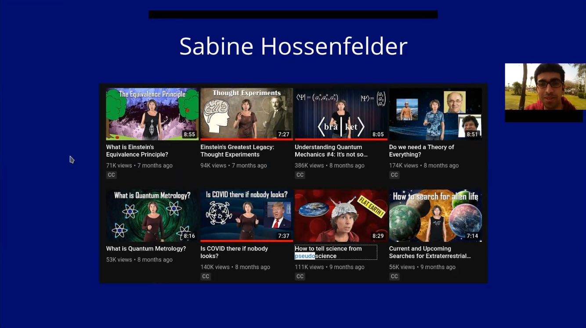
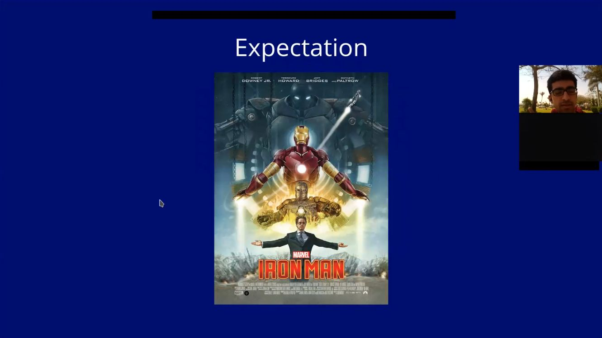
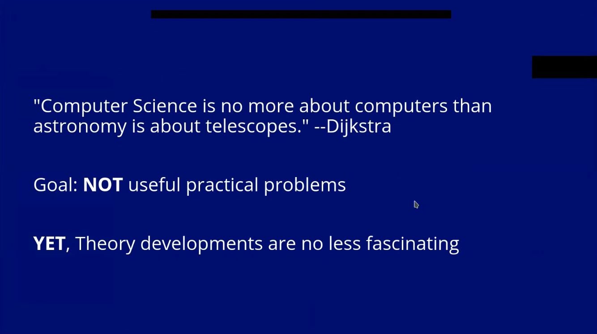
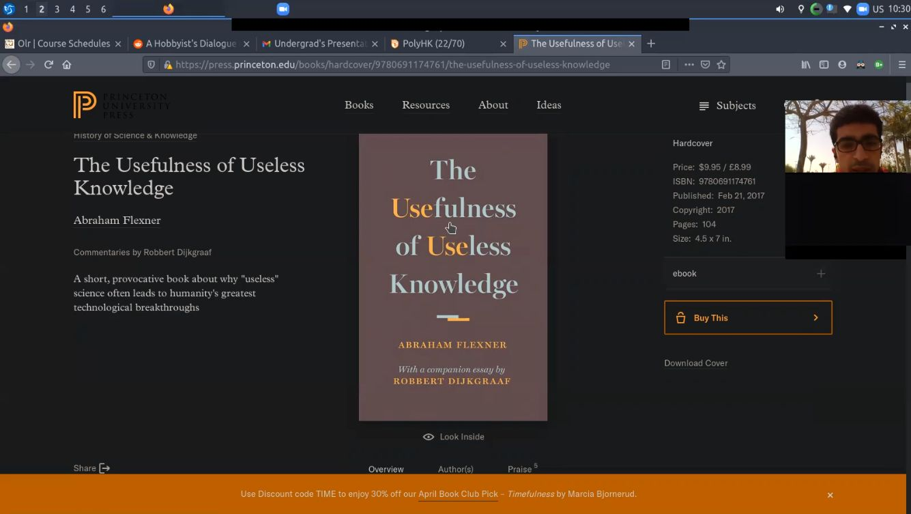
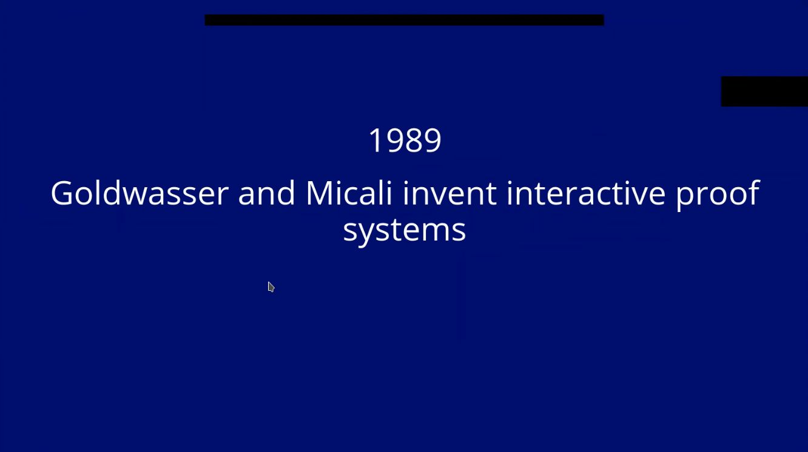
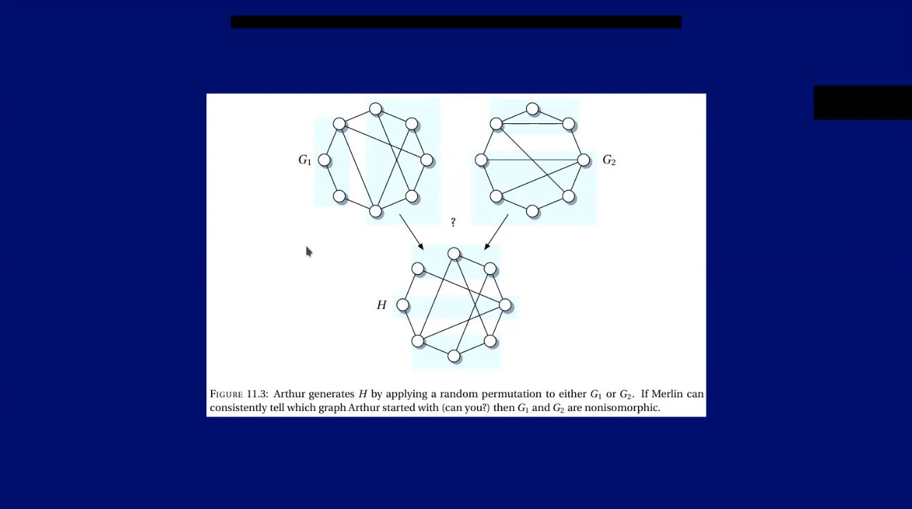
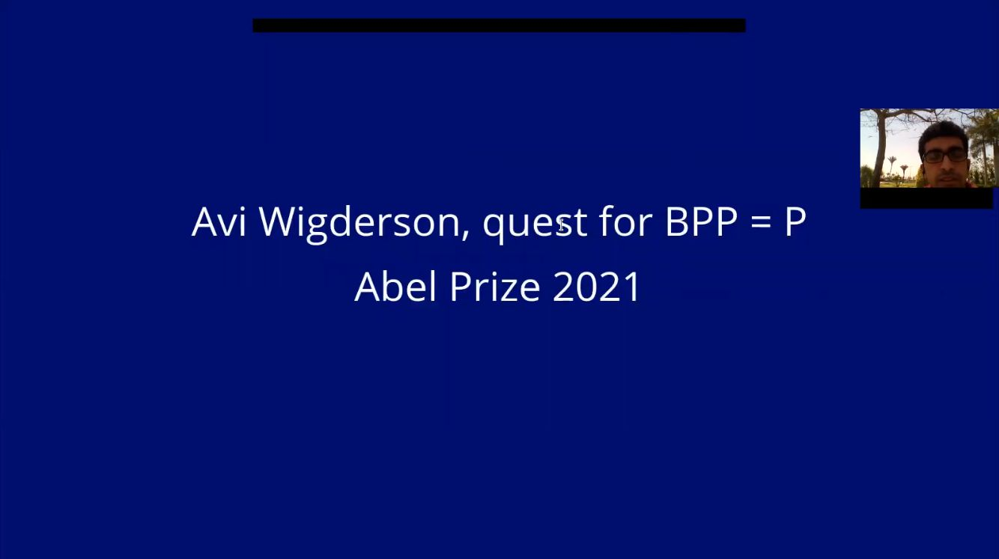

A Hobbyist's Dialogue on Theoretical CS and Overview of Computational Complexity

Playing The Video
At the bottom right of the above picture, There is a hyperlinked caption. Click on it to play the video.
Talk Abstract
If people thought of something fascinating about computers, Then it would usually be about some fancy practical application. In this talk we tackle computers, but their theory or pure-math perspective. A central goal is to show everyone that theory developments are no less exciting and fascinating than practical computing. We hope to expose attendees to wear different shoes for theoretical CS. Particularly, We give an overview of computational complexity theory, which deals with classes of computational problems as a whole, not concrete individual problems like algorithms. The talk assumes no technical background, and is composed mainly of historical developments. The speaker is an undergrad student, and he is in no way an expert or authorized in this field. Rather, We give more personal reflections and hope for the talk to be as interactive as possible.
Table of Contents
How it All Started
It all started with a linkedin chat message I sent to Larry, For making an online-based study group with other hobbyists from compsci-subreddit. Unfortuantely, The study group did not sustain. While we were speaking together, I mentioned how cool prof. Steven Skiena is. It turned out he was Larry’s professor back when Larry was an undergrad student at Stony Brook university!. It was very kind of Larry that he wanted to support me by joining me in Stony Brook’s Algorithms seminar.
Then I sent an email to the seminar’s mailing list, Expressing my wish to give a talk on history of computational complexity, Inspired by Fortnow’s and Homer brief historical survey. prof. Skiena emailed me (yaay!) informing that there is no space for me to give the talk and that even grad students who attend the seminar taking credit for it, Do not usually present anything.
Luckly, My email sent to Stony Brook’s mailing list, Was received by Bo Li, A previously PhD student at Stony Brook. Then I received an email from him, Where he expressed he wishes me to give the talk for him!. It was very kind and encouraging for me, That he allowed me to give the talk with all his PhD students.
Good Shots
Physicists Success in Popular Science

Why Not an Engineer?

Theory is No Less Fascinating

The Usefulness of Useless Knowledge

Shafi and Silvio’s Seminal Paper

Interactive Proof System

Avi’s Abel Prize 2021 Award
